作品について
無意識のうちに形づくられる場所の意味は見えにくいが、その視点で都市や建築を観察すると、空間が私たちの行為や存在にどう関わるかを問い直せる。そこで、明確な目的をいったん保留し、空間の多様な表情を丁寧に読む仕組みを考える。演劇が日常の身振りを模倣し、演者と観客が世界を共有する営みであることに注目し、地域で営まれるふるまいと空間を演劇のように模倣することで、都市空間に潜む無意識的な意味を共有する仕組みを構想する。その地域固有の空間の型を「ふるまいの模型」と名づけ、劇場設計へと結びつけている。
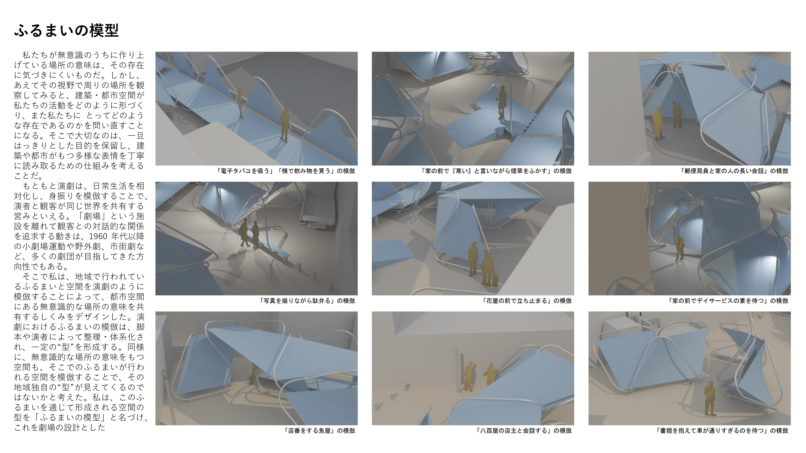
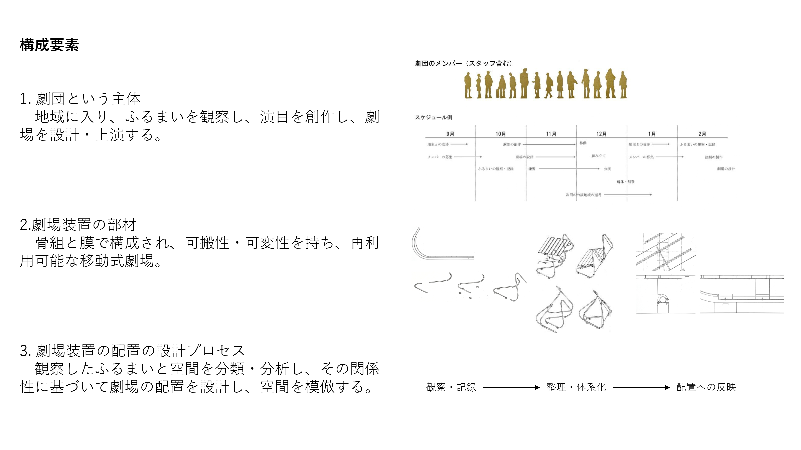
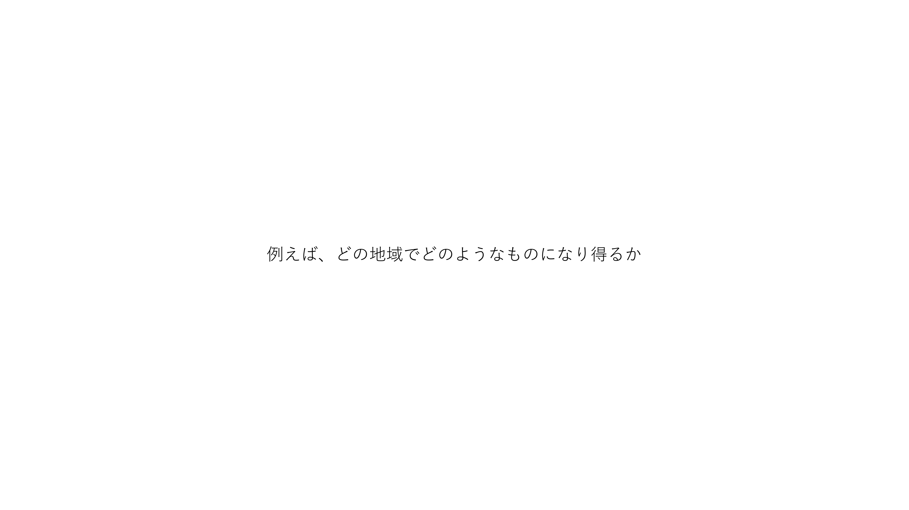
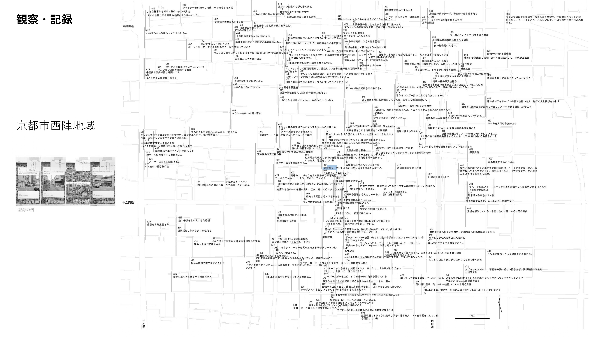
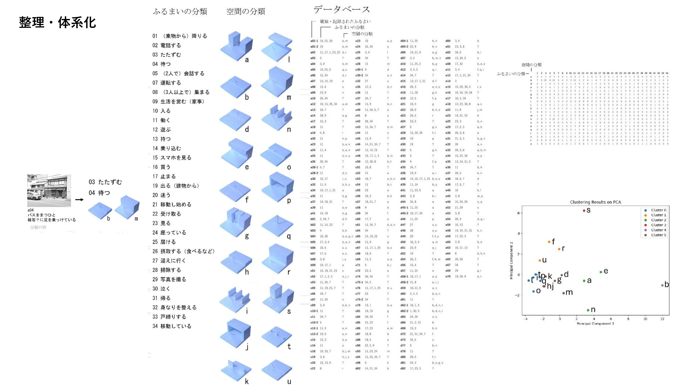
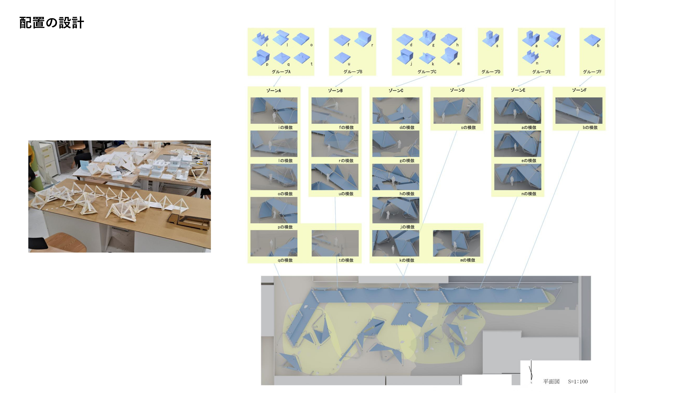
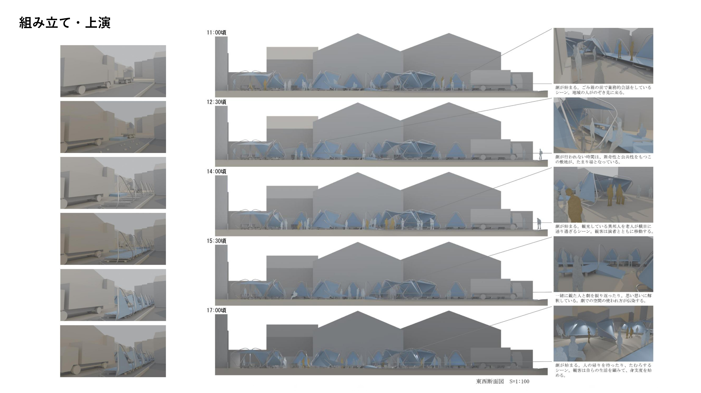
展示の様子
2025年、京都文化博物館での京都工芸繊維大学 卒業・修了研究展にて
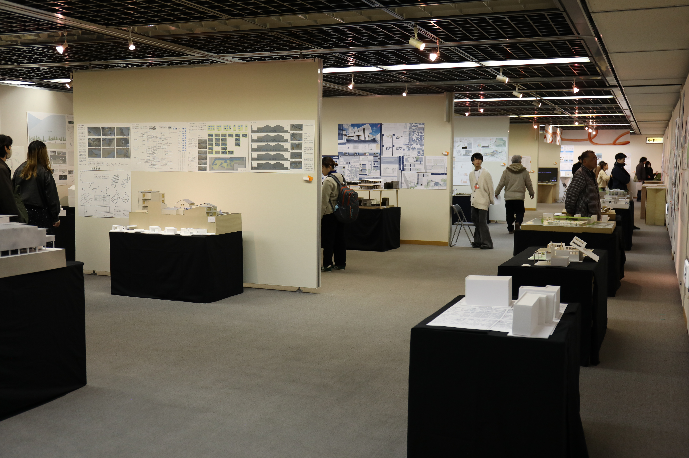
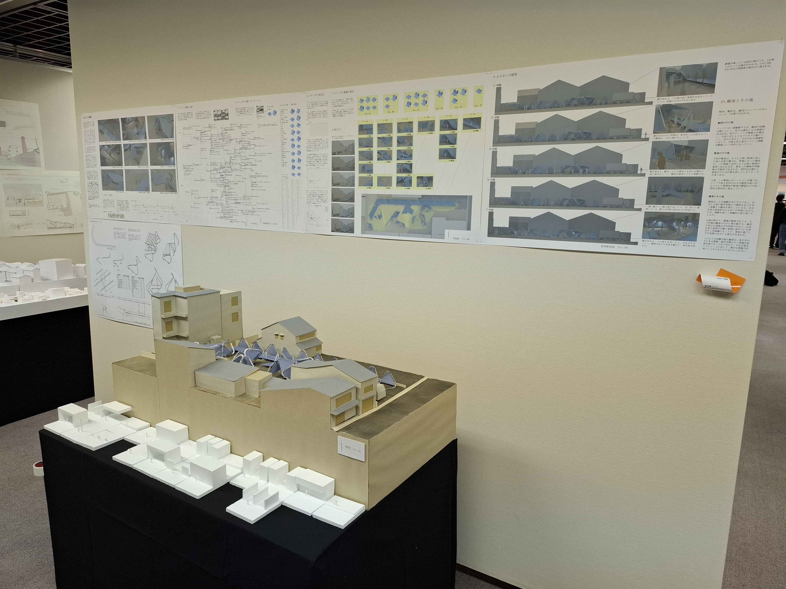
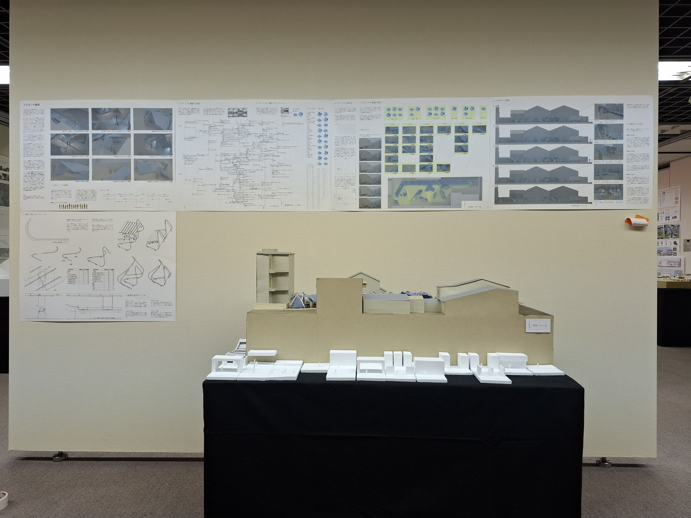
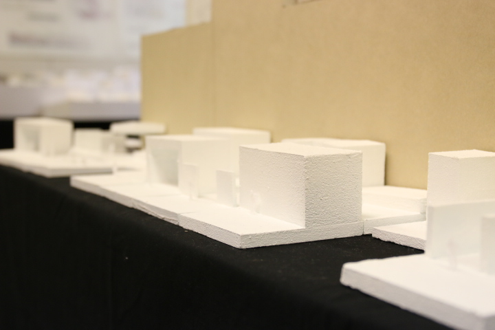
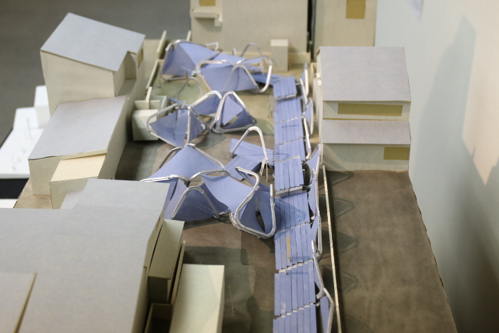
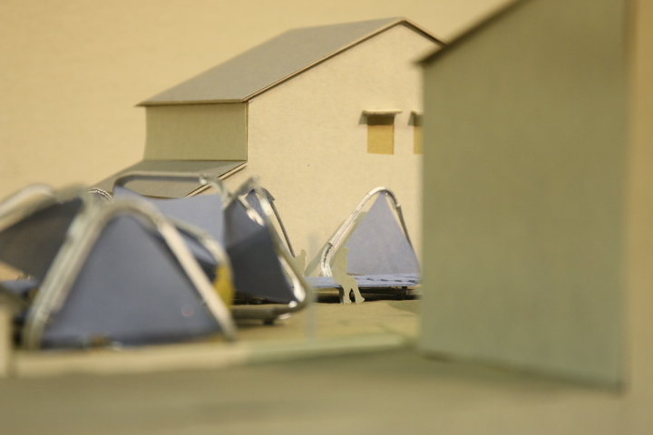
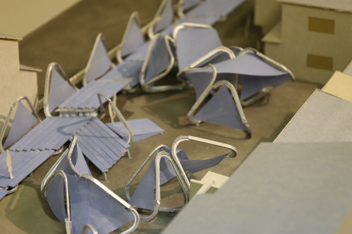